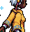

Riley · Neck & shoulders
Still study · Preview only · Game unchanged
Rebuilt arm attachment: the green-sword sleeve no longer starts from the middle of Riley’s back. Its shoulder is now on the side of her upper chest, below the neck; the upper arm descends from that shoulder before bending back toward her sword hand.
Neck: exposed shaded skin now connects the jaw to the collar.
This is a structural redraw, not another darkened shoulder bump. Still preview only — the game and animations remain unchanged.
Original

Rebuilt shoulder & neck

Neck & shoulder close-up
Original

Rebuilt shoulder & neck

Compare the origin of the green-sword sleeve: back in the original, upper chest in the redraw. This is a proposal, not an applied character update.